Example: Analyzing #statstiktok
statstiktok.RmdFirst, let’s load the tiktokr library and the tidyverse.
Make sure to use your preferred Python installation
library(reticulate)
use_python(py_config()$python)The next two steps you only need to do once:
- Install necessary Python libraries
- Authentication
In November 2020, Tiktok increased its security protocol. They now frequently show a captcha, which is easily triggered after a few requests. This can be solved by specifying the cookie parameter. To get a cookie session:
- Open a browser and go to “http://tiktok.com”
- Scroll down a bit, to ensure, that you don’t get any captcha
- Open the javascript console (in Chrome: View > Developer > Javascript Console)
- Run
document.cookiein the console. Copy the entire output (your cookie). - Run
tk_auth()in R and paste the cookie.
Click on image below for screen recording of how to get your TikTok cookie:

The tk_auth function will save cookies (and user agent) as environment variable to your .Renviron file. You need to only run this once to use the tiktokr or whenever you want to update your cookie/user agent.
tk_auth(cookie = "<paste here the output from document.cookie>")Getting #statstiktok posts
Once per script you need to run tk_init to initialize tiktokr
tk_init()
stats_tiktok <- tk_posts(scope = "hashtag", query = "statstiktok", n = 2000)Great! Now we have a dataset with metadata of tiktoks with rstats hashtag!
glimpse(stats_tiktok)
#> Rows: 123
#> Columns: 67
#> $ video_id <chr> "awesome", "awesome", "awesome", "awesome"…
#> $ video_height <int> 1024, 1024, 1024, 1024, 1024, 544, 1024, 1…
#> $ video_width <int> 576, 576, 576, 576, 576, 960, 576, 576, 54…
#> $ video_duration <int> 9, 7, 19, 12, 15, 10, 11, 13, 44, 8, 6, 9,…
#> $ video_ratio <chr> "720p", "720p", "720p", "720p", "720p", "7…
#> $ video_cover <chr> "https://p16-sign-sg.tiktokcdn.com/obj/tos…
#> $ video_originCover <chr> "https://p16-sign-sg.tiktokcdn.com/obj/tos…
#> $ video_dynamicCover <chr> "https://p16-sign-sg.tiktokcdn.com/obj/tos…
#> $ video_playAddr <chr> "https://v16-web.tiktok.com/video/tos/usea…
#> $ video_downloadAddr <chr> "https://v16-web.tiktok.com/video/tos/usea…
#> $ video_shareCover <chr> "c(\"\", \"https://p16-sign-sg.tiktokcdn.c…
#> $ video_reflowCover <chr> "https://p16-sign-sg.tiktokcdn.com/obj/tos…
#> $ author_id <chr> "6815076321426326533", "681507632142632653…
#> $ author_uniqueId <chr> "chelllarson", "chelllarson", "chelseaparl…
#> $ author_nickname <chr> "Mitchell", "Mitchell", "Chelsea Parlett",…
#> $ author_avatarThumb <chr> "https://p16-sign-va.tiktokcdn.com/musical…
#> $ author_avatarMedium <chr> "https://p16-sign-va.tiktokcdn.com/musical…
#> $ author_avatarLarger <chr> "https://p16-sign-va.tiktokcdn.com/musical…
#> $ author_signature <chr> "#statstiktok", "#statstiktok", "Just real…
#> $ author_verified <chr> "FALSE", "FALSE", "FALSE", "FALSE", "FALSE…
#> $ author_secUid <chr> "MS4wLjABAAAARU9QzliiCVeZiuAx4r-JdbzhucGjg…
#> $ author_secret <chr> "FALSE", "FALSE", "FALSE", "FALSE", "FALSE…
#> $ author_ftc <chr> "FALSE", "FALSE", "FALSE", "FALSE", "FALSE…
#> $ author_relation <int> 0, 0, 0, 0, 0, 0, 0, 0, 0, 0, 0, 0, 0, 0, …
#> $ author_openFavorite <chr> "FALSE", "FALSE", "FALSE", "FALSE", "FALSE…
#> $ author_commentSetting <int> 0, 0, 0, 0, 0, 0, 0, 0, 0, 0, 0, 0, 0, 0, …
#> $ author_duetSetting <int> 0, 0, 0, 0, 0, 0, 0, 0, 0, 0, 0, 0, 0, 0, …
#> $ author_stitchSetting <int> 0, 0, 0, 0, 0, 0, 0, 0, 0, 0, 0, 0, 0, 0, …
#> $ author_privateAccount <chr> "FALSE", "FALSE", "FALSE", "FALSE", "FALSE…
#> $ music_id <chr> "6886831115148036869", "689022456349447245…
#> $ music_title <chr> "Ur appreciated ily", "original sound", "o…
#> $ music_playUrl <chr> "https://sf16-sg.tiktokcdn.com/obj/musical…
#> $ music_coverThumb <chr> "https://p16-sign-va.tiktokcdn.com/tos-mal…
#> $ music_coverMedium <chr> "https://p16-sign-va.tiktokcdn.com/tos-mal…
#> $ music_coverLarge <chr> "https://p16-sign-va.tiktokcdn.com/tos-mal…
#> $ music_authorName <chr> "angela vasquez \U0001f49f", "carson", "Ra…
#> $ music_original <chr> "TRUE", "TRUE", "TRUE", "TRUE", "FALSE", "…
#> $ stats_diggCount <int> 42500, 2853, 2789, 1328, 1019, 638, 531, 2…
#> $ stats_shareCount <int> 6136, 480, 355, 10, 44, 11, 46, 38, 0, 17,…
#> $ stats_commentCount <int> 965, 75, 56, 27, 43, 2, 45, 16, 32, 10, 11…
#> $ stats_playCount <int> 554100, 47200, 40100, 15200, 11500, 3386, …
#> $ authorStats_followingCount <int> 32, 32, 240, 240, 240, 24, 240, 240, 7790,…
#> $ authorStats_followerCount <int> 259, 259, 1519, 1519, 1519, 2752, 1519, 15…
#> $ authorStats_heartCount <int> 45500, 45500, 12000, 12000, 12000, 32100, …
#> $ authorStats_videoCount <int> 5, 5, 69, 69, 69, 306, 69, 69, 490, 69, 69…
#> $ authorStats_diggCount <int> 13800, 13800, 785, 785, 785, 8462, 785, 78…
#> $ authorStats_heart <int> 45500, 45500, 12000, 12000, 12000, 32100, …
#> $ id <chr> "6895134839197011206", "689431916878766413…
#> $ desc <chr> "Where are all my fellow H0s at? No HAs al…
#> $ createTime <int> 1605398717, 1605208816, 1599615483, 159992…
#> $ challenges <chr> "list(id = \"1663286341999621\", title = \…
#> $ originalItem <chr> "FALSE", "FALSE", "FALSE", "FALSE", "FALSE…
#> $ officalItem <chr> "FALSE", "FALSE", "FALSE", "FALSE", "FALSE…
#> $ textExtra <chr> "list(awemeId = \"\", start = 47, end = 59…
#> $ secret <chr> "FALSE", "FALSE", "FALSE", "FALSE", "FALSE…
#> $ forFriend <chr> "FALSE", "FALSE", "FALSE", "FALSE", "FALSE…
#> $ digged <chr> "FALSE", "FALSE", "FALSE", "FALSE", "FALSE…
#> $ itemCommentStatus <int> 0, 0, 0, 0, 0, 0, 0, 0, 0, 0, 0, 0, 0, 0, …
#> $ showNotPass <chr> "FALSE", "FALSE", "FALSE", "FALSE", "FALSE…
#> $ vl1 <chr> "FALSE", "FALSE", "FALSE", "FALSE", "FALSE…
#> $ itemMute <chr> "FALSE", "FALSE", "FALSE", "FALSE", "FALSE…
#> $ privateItem <chr> "FALSE", "FALSE", "FALSE", "FALSE", "FALSE…
#> $ duetEnabled <chr> "TRUE", "TRUE", "TRUE", "TRUE", "TRUE", "T…
#> $ stitchEnabled <chr> "TRUE", "TRUE", "TRUE", "TRUE", "TRUE", "T…
#> $ shareEnabled <chr> "TRUE", "TRUE", "TRUE", "TRUE", "TRUE", "T…
#> $ isAd <chr> "FALSE", "FALSE", "FALSE", "FALSE", "FALSE…
#> $ effectStickers <chr> "NULL", "NULL", "NULL", "NULL", "NULL", "N…There are quite a few variables. We do not really care about many of them so as a first step we select only relevant variables. I also like to use janitor for cleaning up variable names.
library(janitor)
stats_tk <- stats_tiktok %>%
select(id, createTime,
author_id:author_nickname,
author_signature, author_avatarLarger,
desc, music_id:authorStats_heart) %>%
clean_names() %>%
distinct(id, .keep_all = T)
glimpse(stats_tk)
#> Rows: 123
#> Columns: 26
#> $ id <chr> "6895134839197011206", "6894319168787664…
#> $ create_time <int> 1605398717, 1605208816, 1599615483, 1599…
#> $ author_id <chr> "6815076321426326533", "6815076321426326…
#> $ author_unique_id <chr> "chelllarson", "chelllarson", "chelseapa…
#> $ author_nickname <chr> "Mitchell", "Mitchell", "Chelsea Parlett…
#> $ author_signature <chr> "#statstiktok", "#statstiktok", "Just re…
#> $ author_avatar_larger <chr> "https://p16-sign-va.tiktokcdn.com/music…
#> $ desc <chr> "Where are all my fellow H0s at? No HAs …
#> $ music_id <chr> "6886831115148036869", "6890224563494472…
#> $ music_title <chr> "Ur appreciated ily", "original sound", …
#> $ music_play_url <chr> "https://sf16-sg.tiktokcdn.com/obj/music…
#> $ music_cover_thumb <chr> "https://p16-sign-va.tiktokcdn.com/tos-m…
#> $ music_cover_medium <chr> "https://p16-sign-va.tiktokcdn.com/tos-m…
#> $ music_cover_large <chr> "https://p16-sign-va.tiktokcdn.com/tos-m…
#> $ music_author_name <chr> "angela vasquez \U0001f49f", "carson", "…
#> $ music_original <chr> "TRUE", "TRUE", "TRUE", "TRUE", "FALSE",…
#> $ stats_digg_count <int> 42500, 2853, 2789, 1328, 1019, 638, 531,…
#> $ stats_share_count <int> 6136, 480, 355, 10, 44, 11, 46, 38, 0, 1…
#> $ stats_comment_count <int> 965, 75, 56, 27, 43, 2, 45, 16, 32, 10, …
#> $ stats_play_count <int> 554100, 47200, 40100, 15200, 11500, 3386…
#> $ author_stats_following_count <int> 32, 32, 240, 240, 240, 24, 240, 240, 779…
#> $ author_stats_follower_count <int> 259, 259, 1519, 1519, 1519, 2752, 1519, …
#> $ author_stats_heart_count <int> 45500, 45500, 12000, 12000, 12000, 32100…
#> $ author_stats_video_count <int> 5, 5, 69, 69, 69, 306, 69, 69, 490, 69, …
#> $ author_stats_digg_count <int> 13800, 13800, 785, 785, 785, 8462, 785, …
#> $ author_stats_heart <int> 45500, 45500, 12000, 12000, 12000, 32100…Stats about tiktokers
Let`s first check out the top posters in the data.
stats_tk %>%
count(author_unique_id, sort = T) %>%
filter(n >= 2) %>%
mutate(authr_url = paste0("https://www.tiktok.com/@", author_unique_id)) %>%
knitr::kable()| author_unique_id | n | authr_url |
|---|---|---|
| chelseaparlettpelleriti | 61 | https://www.tiktok.com/@chelseaparlettpelleriti |
| baboutunt | 5 | https://www.tiktok.com/@baboutunt |
| dsquintana | 5 | https://www.tiktok.com/@dsquintana |
| lakens | 4 | https://www.tiktok.com/@lakens |
| epiellie | 3 | https://www.tiktok.com/@epiellie |
| morgane_fevrier | 3 | https://www.tiktok.com/@morgane_fevrier |
| statprof | 3 | https://www.tiktok.com/@statprof |
| bookmatter | 2 | https://www.tiktok.com/@bookmatter |
| chelllarson | 2 | https://www.tiktok.com/@chelllarson |
| dataislife | 2 | https://www.tiktok.com/@dataislife |
| ladykelp | 2 | https://www.tiktok.com/@ladykelp |
| rismyfavouriteletter | 2 | https://www.tiktok.com/@rismyfavouriteletter |
| ryansscience | 2 | https://www.tiktok.com/@ryansscience |
| sam_d_parsons | 2 | https://www.tiktok.com/@sam_d_parsons |
If you want to only analyze authors you can filter the data down like this.
tiktokers <- stats_tk %>%
select(contains("author")) %>%
add_count(author_unique_id, name = "vids_in_sample") %>%
distinct(author_id, .keep_all = T)
glimpse(tiktokers)
#> Rows: 39
#> Columns: 13
#> $ author_id <chr> "6815076321426326533", "6736543492652696…
#> $ author_unique_id <chr> "chelllarson", "chelseaparlettpelleriti"…
#> $ author_nickname <chr> "Mitchell", "Chelsea Parlett", "mr Akram…
#> $ author_signature <chr> "#statstiktok", "Just really bad #statsT…
#> $ author_avatar_larger <chr> "https://p16-sign-va.tiktokcdn.com/music…
#> $ music_author_name <chr> "angela vasquez \U0001f49f", "Rachel Mar…
#> $ author_stats_following_count <int> 32, 240, 24, 7790, 33, 3130, 2691, 42, 9…
#> $ author_stats_follower_count <int> 259, 1519, 2752, 12100, 13100, 13700, 29…
#> $ author_stats_heart_count <int> 45500, 12000, 32100, 122800, 119900, 195…
#> $ author_stats_video_count <int> 5, 69, 306, 490, 124, 416, 108, 83, 178,…
#> $ author_stats_digg_count <int> 13800, 785, 8462, 11800, 34000, 284, 149…
#> $ author_stats_heart <int> 45500, 12000, 32100, 122800, 119900, 195…
#> $ vids_in_sample <int> 2, 61, 1, 1, 1, 3, 1, 2, 1, 1, 4, 5, 1, …Who has the most videos in sample?
tiktokers %>%
arrange(desc(vids_in_sample)) %>%
slice(1:10) %>%
select(author_unique_id, vids_in_sample) %>%
mutate(authr_url = paste0("https://www.tiktok.com/@", author_unique_id)) %>%
knitr::kable()| author_unique_id | vids_in_sample | authr_url |
|---|---|---|
| chelseaparlettpelleriti | 61 | https://www.tiktok.com/@chelseaparlettpelleriti |
| dsquintana | 5 | https://www.tiktok.com/@dsquintana |
| baboutunt | 5 | https://www.tiktok.com/@baboutunt |
| lakens | 4 | https://www.tiktok.com/@lakens |
| morgane_fevrier | 3 | https://www.tiktok.com/@morgane_fevrier |
| epiellie | 3 | https://www.tiktok.com/@epiellie |
| statprof | 3 | https://www.tiktok.com/@statprof |
| chelllarson | 2 | https://www.tiktok.com/@chelllarson |
| ryansscience | 2 | https://www.tiktok.com/@ryansscience |
| bookmatter | 2 | https://www.tiktok.com/@bookmatter |
Unsurprisingly, Chelsea Parlett-Pelleriti tops the list. She is one of the pioeneers of #statstiktok.
Who has the most followers?
tiktokers %>%
arrange(desc(author_stats_follower_count)) %>%
slice(1:10) %>%
select(author_unique_id, author_stats_follower_count, vids_in_sample) %>%
mutate(authr_url = paste0("https://www.tiktok.com/@", author_unique_id)) %>%
knitr::kable()| author_unique_id | author_stats_follower_count | vids_in_sample | authr_url |
|---|---|---|---|
| morgane_fevrier | 13700 | 3 | https://www.tiktok.com/@morgane_fevrier |
| easyworkgaming | 13100 | 1 | https://www.tiktok.com/@easyworkgaming |
| claredoe | 12100 | 1 | https://www.tiktok.com/@claredoe |
| dimplisimply81 | 9677 | 1 | https://www.tiktok.com/@dimplisimply81 |
| office305 | 3562 | 1 | https://www.tiktok.com/@office305 |
| bellasunrae | 2907 | 1 | https://www.tiktok.com/@bellasunrae |
| akrampathan4545 | 2752 | 1 | https://www.tiktok.com/@akrampathan4545 |
| chelseaparlettpelleriti | 1519 | 61 | https://www.tiktok.com/@chelseaparlettpelleriti |
| ryansscience | 1464 | 2 | https://www.tiktok.com/@ryansscience |
| mahdikhdiri | 1059 | 1 | https://www.tiktok.com/@mahdikhdiri |
Posts over time
stats_tk %>%
mutate(create_date = from_unix(create_time) %>% lubridate::floor_date("day")) %>%
count(create_date) %>%
mutate(cumsum_n = cumsum(n)) %>%
ggplot(aes(create_date, cumsum_n)) +
geom_line() +
theme_minimal() +
scale_x_datetime(date_labels = "%B %Y") 